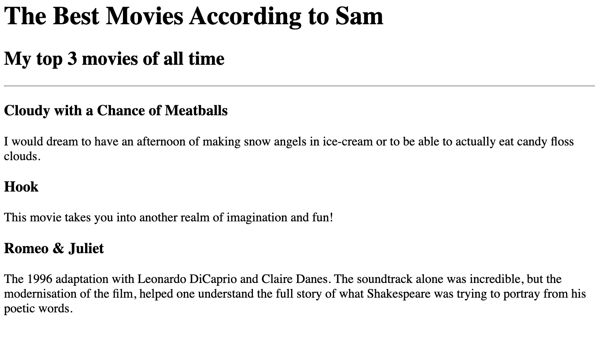
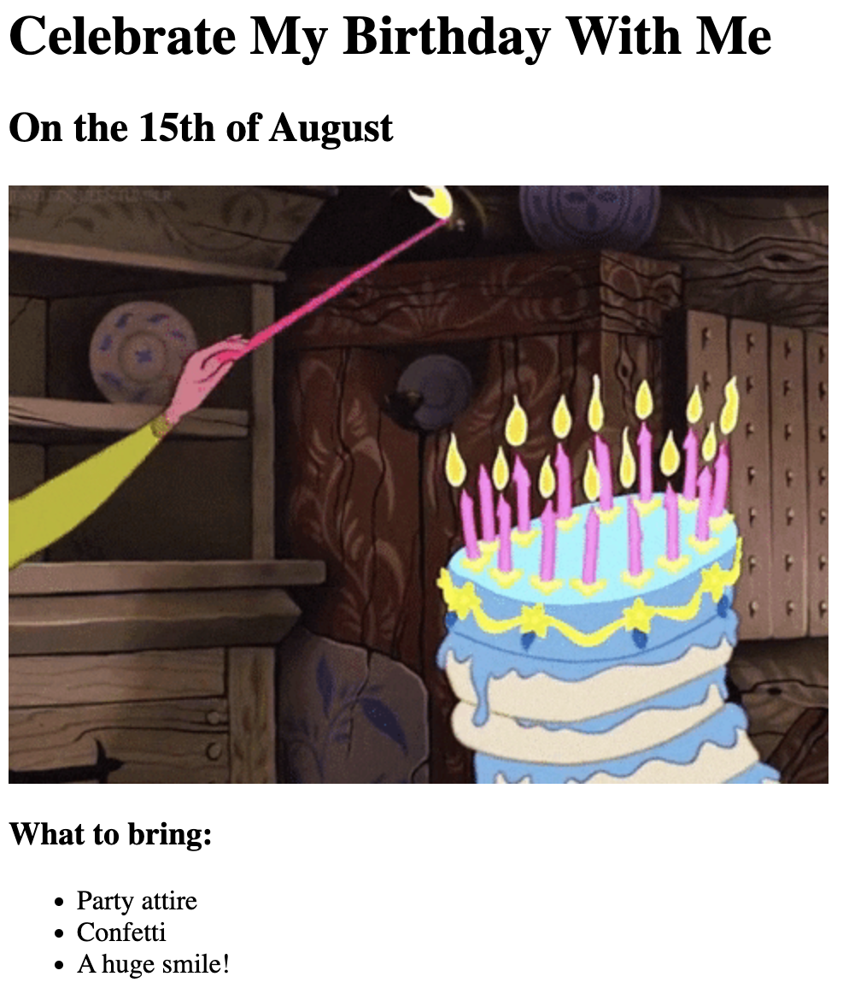

This is the first of the Capstone Projects completed for The Complete 2024 Web Development Bootcamp course by Dr Angela Yu (through Udemy).
This was to test my competency in the following:
This was an exercise for understanding HTML heading tags.
This was an exercise for understanding HTML heading tags, anchor tags, using images, and using list tags.
